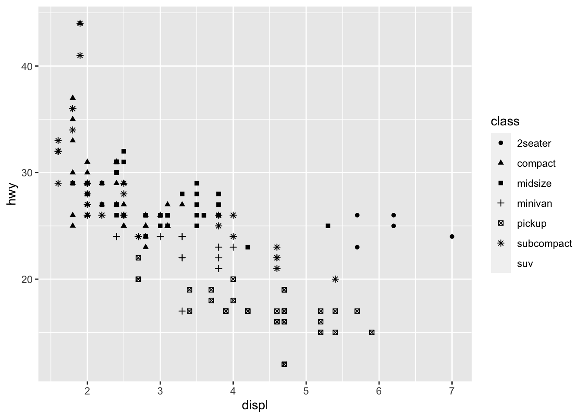

Vectors
- Contrary to scalars, vectors have magnitude and direction:
\[z = \begin{bmatrix}0 \\
2\\
4
\end{bmatrix}\]
| c(…) |
The default method combines its arguments to form a vector |
| <- or = |
Assign a value to an object/variable |
| typeof(x)/class(x) |
Access the base type/class of an object |
| length(x) |
Access number of elements of an object |
| [] |
Subsets the elements of a vector |
| +, -, /, * |
Scalar and vector mathematical operators |
- Let’s create four different vectors:
a <- c(1,2,5.3,6,-2,4) # numeric vector
b <- c("one","two","three") # character vector
c <- c(TRUE,TRUE,TRUE,FALSE,TRUE,FALSE) #logical vector
d <- c("1", 1, "TRUE", TRUE, "Hello")
# a, b, c and d are variables or objects (in this case vector variables).
# Variables can store different data types.
# 1. We can access the base type of an object:
typeof(a)
## [1] "double"
## [1] 6
## [1] 1
## [1] 1 2
## [1] 5.3 6.0 -2.0
## [1] 2.0 4.0 10.6 12.0 -4.0 8.0
## [1] 0 0 0 0 0 0
## [1] 1.00 4.00 28.09 36.00 4.00 16.00
## [1] 1 1 1 1 1 1
Exercises 1:
# 1. Create a variable called "vec1" and assign it the vector
# c("Hello", ",", "", "world", "!")
# 2. Find the number of elements of vec1.
# 3. Assign the 1st, 3rd and last elements of the vector to the variables
# x, y and z, respectively.
# 4. Run the following code:
print(paste("The 1st element of vec1 is:", x))
print(paste("The 3rd element of vec1 is:", y))
print(paste("The last element of vec1 is:", z))
# 4.1 Why is the 3rd element of vec1 not printing anything?
#Is there a mistake in your code?
# 4.2 Could you access the last element of vec1?
#Did you use a built-in R function? If not, can you think of any?
# 4.3. What is the paste() function doing?
# How is it different from the c()?
# Hint: use the function length().
# 5. What happens if you print vector d in the example above?
# What type has vector d?
# 6. Can you replace the 3rd element of vec1 y "pretty"? Hint: vectos are mutable and you can replace an element with [].
Optional Exercises:
- Spend some time adding, multiplying, subtracting and dividing the vectors a, b, c and d. Are all operations allowed with every vector? Pay attention to the errors displayed! Do they make sense?
- How would you modify the first element of a?
Matrices
- A matrix is a collection of data elements arranged in a two-dimensional rectangular layout:
\[X = \begin{bmatrix}0 & 1\\
2 & 3\\
4 & 5
\end{bmatrix}\]
| matrix(data = NA, nrow = 1, ncol = 1, byrow = FALSE) |
Creates a matrix from the given set of values |
| print(x, …) |
Prints its argument |
| head(x, …) |
Returns the first or last parts of a vector, matrix, table, data frame or function. Since head() and tail() are generic functions, they may also have been extended to other classes |
| dim(x) |
Retrieve or set the dimension of an object |
| length(x) |
Get or set the length of vectors (including lists) and factors, and of any other R object for which a method has been defined |
| t(x) |
Given a matrix or data.frame x, t returns the transpose of x |
| +, -, %*% |
Matrix mathematical operators |
- All columns in a matrix must have the same mode(numeric, character, etc.) and the same length. We can easily generate a matrix in R:
## [,1] [,2] [,3]
## [1,] 1 2 3
## [2,] 4 5 6
## [3,] 7 8 9
## [4,] 10 11 12
## [5,] 13 14 15
## [6,] 16 17 18
## [,1] [,2] [,3]
## [1,] 1 2 3
## [2,] 4 5 6
## [3,] 7 8 9
## [4,] 10 11 12
## [5,] 13 14 15
## [6,] 16 17 18
## [,1] [,2] [,3]
## [1,] 1 2 3
## [2,] 4 5 6
## [1] 6 3
## [,1] [,2] [,3]
## [1,] 2 4 6
## [2,] 8 10 12
## [3,] 14 16 18
## [4,] 20 22 24
## [5,] 26 28 30
## [6,] 32 34 36
## [,1] [,2] [,3]
## [1,] 0 0 0
## [2,] 0 0 0
## [3,] 0 0 0
## [4,] 0 0 0
## [5,] 0 0 0
## [6,] 0 0 0
## [,1] [,2] [,3] [,4] [,5] [,6]
## [1,] 54 60 66 72 78 84
## [2,] 117 132 147 162 177 192
## [3,] 180 204 228 252 276 300
## [4,] 243 276 309 342 375 408
## [5,] 306 348 390 432 474 516
## [6,] 369 420 471 522 573 624
## [,1]
## [1,] 58.9
## [2,] 156.7
## [3,] 254.5
## [,1] [,2] [,3]
## [1,] 1 7 13
## [2,] 2 8 14
## [3,] 3 9 15
## [4,] 4 10 16
## [5,] 5 11 17
## [6,] 6 12 18
Exercises 2:
Optional Exercises:
- Try to use the length() function with X. What does this give you? Hint: how do the results compare when you used it with vec1?
Factors
- Factors are also created using vectors
- Factors are variables in R used to represent categorical variables, i.e., variables that have a fixed and known set of possible values. Very important for statistical modeling!
- Factors are stored as integers, and have labels associated with these unique integers.
- Factors can often be a bit tricky, because many of the functions in base R automatically convert characters to factors. This means that factors often crop up in places where they’re not actually helpful…
| factor(x, …) |
Used to encode a vector as a factor |
| levels(x) |
provides access to the levels attribute of a variable |
| nlevels() |
Return the number of levels which its argument has |
- Let’s create a vector first:
## [1] "Apr" "Dec" "Jan" "Jun"
# 2.1 To fix this, we can use factors!
month_levels <- c("Jan", "Feb", "Mar",
"Apr", "May", "Jun",
"Jul", "Aug", "Sep",
"Oct", "Nov", "Dec")
y1 <- factor(x1, levels = month_levels)
# 2.2 Now the sort is meaningful:
sort(y1)
## [1] Jan Apr Jun Dec
## Levels: Jan Feb Mar Apr May Jun Jul Aug Sep Oct Nov Dec
## [1] Dec Jun Apr <NA>
## Levels: Jan Feb Mar Apr May Jun Jul Aug Sep Oct Nov Dec
## [1] "Jan" "Feb" "Mar" "Apr" "May" "Jun" "Jul" "Aug" "Sep" "Oct" "Nov" "Dec"
## [1] 12
## [1] "low" "medium" "high"
## Error in Summary.factor(structure(c(1L, 3L, 2L, 3L, 1L, 2L, 3L), .Label = c("low", : 'min' not meaningful for factors
## [1] "low" "medium" "high"
## [1] low
## Levels: low < medium < high
Exercises 3:
# 1. If x = c(1, 2, 3, 3, 5, 3, 2, 4, NA), what are the levels of factor(x)?
# 2. Call the print() function on factor(x). What is the ouptut?
# How is it different from printing a vector?
# 3. You have a vector representing levels of exercise undertaken by 5 subjects
# “l”, “n”, “n”, “i”, “l” ; n=none, l=light, i=intense
# What is the best way to represent this in R?
# 4. What happens when you run the following lines of code?
food <- c("low", "high", "medium", "high", "low", "medium", "high")
food2 <- factor(food, levels = c("low", "medium", "high"), ordered = TRUE)
plot(food)
plot(food2)
Data-frames
Similar to a matrix, also a two-dimensional array which information is stored in tabular format, i.e., each column contains values of one variable and each row contains one set of values from each column.
- Data frames must have the following characteristics:
- The column names should be non-empty
- The row names should be unique
The data stored in a data frame can be of numeric, factor or character type
Each column should contain same number of data items
Note that the almost all functions below can be used with matrices as well. However, if you are working with matrices, I would not recommend adding column or row names.
| data.frame(…) |
Creates data frames, tightly coupled collections of variables |
| summary(object, …) |
Produces result summaries of the results of various model fitting functions or objects |
| str() |
Compactly display the internal structure of an R object, a diagnostic function and an alternative to summary() |
| nrow(x) / ncol(x) |
nrow and ncol return the number of rows or columns present in x. Can also be used in matrices |
| names(x) |
Functions to get or set the names of an object |
| rownames(x) / colnames(x) |
Functions to get or set the row names or column names of a matrix/data-frame |
| data() |
Loads specified data sets, or list the available data sets |
| [n,m] |
Subsets data, just as for vectors. Can also be used with matrices! |
| read.csv() / write.csv() |
Provides access to the levels attribute of a variable |
| read.table() / write.table() |
Return the number of levels which its argument has |
| read.delim() |
Return the number of levels which its argument has |
- Let’s explore our first data frames:
# 1. Three ways we can work with data frames:
# 1.1 We can build our own
n <- c(2, 3, 5, 6)
s <- c("aa", "bb", "cc", "dd")
b <- c(TRUE, FALSE, TRUE, FALSE)
c <- factor(c("low", "medium", "high", "intense"))
df <- data.frame(n, s, b, c)
print(df) # notice the column names
## n s b c
## 1 2 aa TRUE low
## 2 3 bb FALSE medium
## 3 5 cc TRUE high
## 4 6 dd FALSE intense
# Alternatively you can build the data frame directly:
df <- data.frame("n" = c(2, 3, 5, 6),
"s" = c("aa", "bb", "cc", "dd"),
"b" = c(TRUE, FALSE, TRUE, FALSE),
"c" = factor(c("low", "medium", "high", "intense")))
# The second method is preferred as it usually takes less time to run
# 1.2. We can load built-in datasets
data(mtcars)
head(mtcars)
## mpg cyl disp hp drat wt qsec vs am gear carb
## Mazda RX4 21.0 6 160 110 3.90 2.620 16.46 0 1 4 4
## Mazda RX4 Wag 21.0 6 160 110 3.90 2.875 17.02 0 1 4 4
## Datsun 710 22.8 4 108 93 3.85 2.320 18.61 1 1 4 1
## Hornet 4 Drive 21.4 6 258 110 3.08 3.215 19.44 1 0 3 1
## Hornet Sportabout 18.7 8 360 175 3.15 3.440 17.02 0 0 3 2
## Valiant 18.1 6 225 105 2.76 3.460 20.22 1 0 3 1
## ID Gender Group BloodPressure Age Aneurisms_q1 Aneurisms_q2
## 1 Sub001 m Control 132 16.0 114 140
## 2 Sub002 m Treatment2 139 17.2 148 209
## 3 Sub003 m Treatment2 130 19.5 196 251
## 4 Sub004 f Treatment1 105 15.7 199 140
## 5 Sub005 m Treatment1 125 19.9 188 120
## 6 Sub006 M Treatment2 112 14.3 260 266
## Aneurisms_q3 Aneurisms_q4
## 1 202 237
## 2 248 248
## 3 122 177
## 4 233 220
## 5 222 228
## 6 320 294
## ID Gender Group BloodPressure
## Length:100 Length:100 Length:100 Min. : 62.0
## Class :character Class :character Class :character 1st Qu.:107.5
## Mode :character Mode :character Mode :character Median :117.5
## Mean :118.6
## 3rd Qu.:133.0
## Max. :173.0
## Age Aneurisms_q1 Aneurisms_q2 Aneurisms_q3
## Min. :12.10 Min. : 65.0 Min. : 80.0 Min. :105.0
## 1st Qu.:14.78 1st Qu.:118.0 1st Qu.:131.5 1st Qu.:182.5
## Median :16.65 Median :158.0 Median :162.5 Median :217.0
## Mean :16.42 Mean :158.8 Mean :168.0 Mean :219.8
## 3rd Qu.:18.30 3rd Qu.:188.0 3rd Qu.:196.8 3rd Qu.:248.2
## Max. :20.00 Max. :260.0 Max. :283.0 Max. :323.0
## Aneurisms_q4
## Min. :116.0
## 1st Qu.:186.8
## Median :219.0
## Mean :217.9
## 3rd Qu.:244.2
## Max. :315.0
## 'data.frame': 100 obs. of 9 variables:
## $ ID : chr "Sub001" "Sub002" "Sub003" "Sub004" ...
## $ Gender : chr "m" "m" "m" "f" ...
## $ Group : chr "Control" "Treatment2" "Treatment2" "Treatment1" ...
## $ BloodPressure: int 132 139 130 105 125 112 173 108 131 129 ...
## $ Age : num 16 17.2 19.5 15.7 19.9 14.3 17.7 19.8 19.4 18.8 ...
## $ Aneurisms_q1 : int 114 148 196 199 188 260 135 216 117 188 ...
## $ Aneurisms_q2 : int 140 209 251 140 120 266 98 238 215 144 ...
## $ Aneurisms_q3 : int 202 248 122 233 222 320 154 279 181 192 ...
## $ Aneurisms_q4 : int 237 248 177 220 228 294 245 251 272 185 ...
## [1] 9
## [1] 100
## [1] "ID" "Gender" "Group" "BloodPressure"
## [5] "Age" "Aneurisms_q1" "Aneurisms_q2" "Aneurisms_q3"
## [9] "Aneurisms_q4"
## [1] "ID" "Gender" "Group" "BloodPressure"
## [5] "Age" "Aneurisms_q1" "Aneurisms_q2" "Aneurisms_q3"
## [9] "Aneurisms_q4"
## [1] "1" "2" "3" "4" "5" "6" "7" "8" "9" "10" "11" "12"
## [13] "13" "14" "15" "16" "17" "18" "19" "20" "21" "22" "23" "24"
## [25] "25" "26" "27" "28" "29" "30" "31" "32" "33" "34" "35" "36"
## [37] "37" "38" "39" "40" "41" "42" "43" "44" "45" "46" "47" "48"
## [49] "49" "50" "51" "52" "53" "54" "55" "56" "57" "58" "59" "60"
## [61] "61" "62" "63" "64" "65" "66" "67" "68" "69" "70" "71" "72"
## [73] "73" "74" "75" "76" "77" "78" "79" "80" "81" "82" "83" "84"
## [85] "85" "86" "87" "88" "89" "90" "91" "92" "93" "94" "95" "96"
## [97] "97" "98" "99" "100"
## n
## 1 2
## 2 3
## 3 5
## 4 6
## [1] 2 3 5 6
## [1] 2 3 5 6
## n s b c
## 1 2 aa TRUE low
## 2 3 bb FALSE medium
## 3 5 cc TRUE high
## n s b
## 1 2 aa TRUE
## 2 3 bb FALSE
## 3 5 cc TRUE
## 4 6 dd FALSE
Exercises 4:
Optional Exercises
- Try running the following on your data frame (replace df, by your data frame name): df[[1:3,]].Why doesn’t this work?
- Advanced: Extract rows that contain information for ages between 15 and 20
Creating a ggplot
- The next step is to load a data frame, which we have already done before. Let’s load the built-in mpg dataset:
## # A tibble: 6 x 11
## manufacturer model displ year cyl trans drv cty hwy fl class
## <chr> <chr> <dbl> <int> <int> <chr> <chr> <int> <int> <chr> <chr>
## 1 audi a4 1.8 1999 4 auto(l5) f 18 29 p compa…
## 2 audi a4 1.8 1999 4 manual(m5) f 21 29 p compa…
## 3 audi a4 2 2008 4 manual(m6) f 20 31 p compa…
## 4 audi a4 2 2008 4 auto(av) f 21 30 p compa…
## 5 audi a4 2.8 1999 6 auto(l5) f 16 26 p compa…
## 6 audi a4 2.8 1999 6 manual(m5) f 18 26 p compa…
The data frame is a 234 x 11 data frame, with the following columns:
manufacturer, model, displ, year, cyl, trans, drv, cty, hwy, fl, class.
This dataset contains a subset of the fuel economy data that the EPA makes available on http://fueleconomy.gov. It contains only models which had a new release every year between 1999 and 2008 - this was used as a proxy for the popularity of the car.
Let’s see what each variable looks like:
## Classes 'tbl_df', 'tbl' and 'data.frame': 234 obs. of 11 variables:
## $ manufacturer: chr "audi" "audi" "audi" "audi" ...
## $ model : chr "a4" "a4" "a4" "a4" ...
## $ displ : num 1.8 1.8 2 2 2.8 2.8 3.1 1.8 1.8 2 ...
## $ year : int 1999 1999 2008 2008 1999 1999 2008 1999 1999 2008 ...
## $ cyl : int 4 4 4 4 6 6 6 4 4 4 ...
## $ trans : chr "auto(l5)" "manual(m5)" "manual(m6)" "auto(av)" ...
## $ drv : chr "f" "f" "f" "f" ...
## $ cty : int 18 21 20 21 16 18 18 18 16 20 ...
## $ hwy : int 29 29 31 30 26 26 27 26 25 28 ...
## $ fl : chr "p" "p" "p" "p" ...
## $ class : chr "compact" "compact" "compact" "compact" ...
- We can now start to ask questions about the data and test our answers, visually. For example, do cars with big engines use more fuel than cars with small engines?
The plot shows a negative relationship between total engine size (displ) and fuel efficiency (hwy). In other words, cars with big engines use more fuel.
- With ggplot2 we begin a plot with the function ggplot. This creates a coordinate system that you can add layers to. The first argument in ggplot() is the dataset you are using.
- The graph is completed adding one more layer to ggplot(). The function geom_point() adds a layer of points to to the plot. There are a lot of geom functions.
Each geom function in ggplot() takes a mapping argument, which defines how your variables are mapped to visual properties. The mapping argument is always linked to aes() and the x and y arguments specify which variables to map to the x and y axes.
Exercises 5:
Aesthetic Mappings
In the plot we showed before, some cars with big engine size seem to fall outside of the linear trend (in red below):
We can start by hypothesizing that these cars that have a larger engine, but higher fuel efficiency are hybrids. One way to test this is to look at the variable class which classifies cars into groups, such as compact, midsize, etc.
We can add a third variable , like class, to a two-dimensional scatterplot inside aes():

- ggplot2 automatixally assign a unique level of an aesthetic (here a unique colour) to each unique value of the variable, a process known as scaling. It will also add a legend that explains which levels correspond to each values.
We can see from the colour legend that many of those unusual cars are actually two-seaters. They don’t seem to be like hybrids and they’re, in fact, sports cars!
In ggplot2 there are other aesthetics. For example, we could assign the variable class to the size aesthetic:
## Warning: Using size for a discrete variable is not advised.
- This is not an ideal visualization, because size is an ordered aesthetic, while class is an unordered categorical variable.
- We can also map to the alpha aesthetic (top), or the shape (bottom) of the points:
## Warning: Using alpha for a discrete variable is not advised.
## Warning: The shape palette can deal with a maximum of 6 discrete values because
## more than 6 becomes difficult to discriminate; you have 7. Consider
## specifying shapes manually if you must have them.
## Warning: Removed 62 rows containing missing values (geom_point).

As you can see by the error message above ggplot2 will only use six shapes at a time. y default, additional groups will go unplotted when you use this aesthetic.
You cal also set the aesthetic properties of your geom manually. For example, we can make all of the points green:
- Here, the colour doesn’t convery information about the variable, but it changes the appearance of the plot. You’ll always need to pick a value that:
- The name of a color as a character string
- The size of a point in mm
- The shape of a point as a number as shown
Exercises 6: